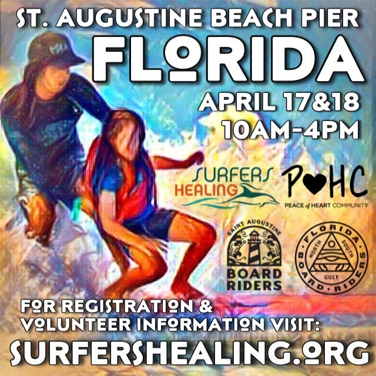

Bringing the Joy of Surfing to the Community
The Surf Station Foundation is a nonprofit organization with a mission to introduce surfing, conservation, and the love of the ocean to kids who might not otherwise have that chance. Our goals are to evoke confidence, inspire environmental awareness, and improve the emotional and physical wellness of kids from disadvantaged and underserved communities. We also partner with, and support the efforts of other charities dedicated to helping others and to environmental conservation.
Featured Event - Surfers Healing
Saturday, August 27, 2022, 10am
The Surf Station Foundation is partnering with Surfers Healing to host an event at the south side of the St. Augustine Beach pier. Surfers Healing is an organization that takes kids with autism surfing. They've given over 4,500 surfers and their families a day of fun and sun in just one year. Throughout this event, our community will give some great kids the opportunity to experience the pure joy that is surfing. The Surf Station Foundation is making a financial contribution to Surfers Healing, and the St. Augustine Boardrider's Club will be on the scene, volunteering their time and skills.